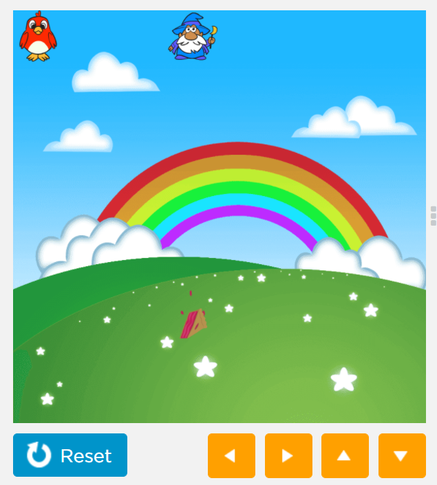
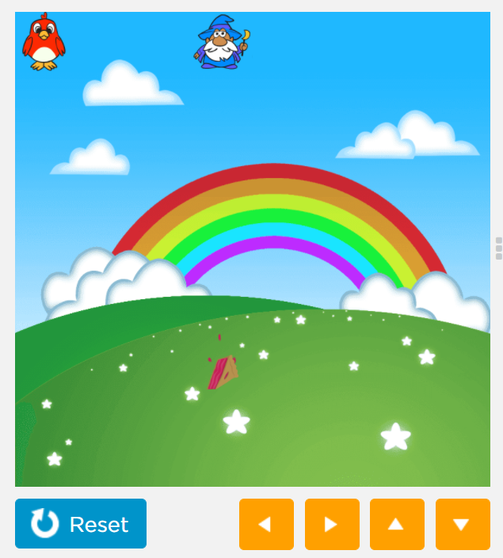

Sir Timothy John Berners-Lee OM KBE FRS FREng FRSA FBCS (born 8 June 1955), also known as TimBL, is an English computer scientist best known as the inventor of the World Wide Web. He is a Professorial Fellow of Computer Science at the University of Oxford and a professor at the Massachusetts Institute of Technology (MIT). Berners-Lee proposed an information management system on 12 March 1989, then implemented the first successful communication between a Hypertext Transfer Protocol (HTTP) client and server via the internet in mid-November.
Berners-Lee is the director of the World Wide Web Consortium (W3C) which oversees the continued development of the Web. He is also the founder of the World Wide Web Foundation and is a senior researcher and holder of the 3Com founders chair at the MIT Computer Science and Artificial Intelligence Laboratory (CSAIL). He is a director of the Web Science Research Initiative (WSRI) and a member of the advisory board of the MIT Center for Collective Intelligence. In 2011, he was named as a member of the board of trustees of the Ford Foundation. He is a founder and president of the Open Data Institute and is currently an advisor at social network MeWe.
In 2004, Berners-Lee was knighted by Queen Elizabeth II for his pioneering work. In April 2009, he was elected a Foreign Associate of the National Academy of Sciences. He was named in Time magazine's list of the 100 Most Important People of the 20th century and has received a number of other accolades for his invention. He was honoured as the "Inventor of the World Wide Web" during the 2012 Summer Olympics opening ceremony in which he appeared working with a vintage Next Computer at the London Olympic Stadium. He tweeted "This is for everyone" which appeared in LCD lights attached to the chairs of the audience. He received the 2016 Turing Award "for inventing the World Wide Web, the first web browser, and the fundamental protocols and algorithms allowing the Web to scale".
 
